<!doctype html><html lang="es-MX"><head><meta charset="utf-8"><meta name="viewport" content="width=device-width,initial-scale=1"><title>S · Símbolos enmarcados | Footer JSDP</title><link rel="stylesheet" href="footer-actual.css"><link rel="stylesheet" href="prototipos.css"></head><body><footer class="site-footer landing-footer heading-prototype prototype-s" id="contacto"><div class="landing-footer-inner"><div class="landing-footer-header"><h2 id="_r_2_-footer-title">Enlaces de interés</h2><div class="landing-footer-brands"><span class="landing-footer-brand-rule" aria-hidden="true"></span></div></div><nav class="landing-footer-directory" aria-labelledby="_r_2_-footer-title"><section class="landing-footer-group landing-footer-group-imss" aria-labelledby="_r_2_-imss"><h3 id="_r_2_-imss"><span class="group-title-content"><span class="heading-icon-frame" aria-hidden="true"></span><span class="heading-label">Enlaces IMSS</span></span></h3><ul><li><a class="landing-footer-link" href="https://siap.imss.gob.mx/" target="_blank" rel="noopener noreferrer"><span>SIAP Portal</span><svg class="landing-footer-arrow" width="14" height="14" viewBox="0 0 24 24" fill="none" stroke="currentColor" stroke-width="1.5" aria-hidden="true" focusable="false"><path d="M6 18 18 6M6 6h12v12"></path></svg><span class="landing-footer-sr-only"> (abre en una pestaña nueva)</span></a></li><li><a class="landing-footer-link" href="http://www.imss.gob.mx/" target="_blank" rel="noopener noreferrer"><span>Página oficial del IMSS</span><svg class="landing-footer-arrow" width="14" height="14" viewBox="0 0 24 24" fill="none" stroke="currentColor" stroke-width="1.5" aria-hidden="true" focusable="false"><path d="M6 18 18 6M6 6h12v12"></path></svg><span class="landing-footer-sr-only"> (abre en una pestaña nueva)</span></a></li><li><a class="landing-footer-link" href="http://intranet/Paginas/index.aspx" target="_blank" rel="noopener noreferrer"><span>Intranet IMSS <small class="landing-footer-network">Red IMSS</small></span><svg class="landing-footer-arrow" width="14" height="14" viewBox="0 0 24 24" fill="none" stroke="currentColor" stroke-width="1.5" aria-hidden="true" focusable="false"><path d="M6 18 18 6M6 6h12v12"></path></svg><span class="landing-footer-sr-only"> (abre en una pestaña nueva)</span></a></li><li><a class="landing-footer-link" href="https://rh.imss.gob.mx/Personal/TarjetonDigital/" target="_blank" rel="noopener noreferrer"><span>Tarjetón digital · Trabajadores</span><svg class="landing-footer-arrow" width="14" height="14" viewBox="0 0 24 24" fill="none" stroke="currentColor" stroke-width="1.5" aria-hidden="true" focusable="false"><path d="M6 18 18 6M6 6h12v12"></path></svg><span class="landing-footer-sr-only"> (abre en una pestaña nueva)</span></a></li><li><a class="landing-footer-link" href="https://rh.imss.gob.mx/Personal/tarjetonjubilados/" target="_blank" rel="noopener noreferrer"><span>Tarjetón digital · Jubilados</span><svg class="landing-footer-arrow" width="14" height="14" viewBox="0 0 24 24" fill="none" stroke="currentColor" stroke-width="1.5" aria-hidden="true" focusable="false"><path d="M6 18 18 6M6 6h12v12"></path></svg><span class="landing-footer-sr-only"> (abre en una pestaña nueva)</span></a></li></ul></section><section class="landing-footer-group landing-footer-group-cubos" aria-labelledby="_r_2_-cubos"><h3 id="_r_2_-cubos"><span class="group-title-content"><span class="heading-icon-frame" aria-hidden="true"></span><span class="heading-label">CUBOS</span></span></h3><ul><li><a class="landing-footer-link" href="http://172.17.246.66/cubos27/sdeleg/menu/sisinf.htm" target="_blank" rel="noopener noreferrer"><span>Sistemas de Información <small class="landing-footer-network">Red IMSS</small></span><svg class="landing-footer-arrow" width="14" height="14" viewBox="0 0 24 24" fill="none" stroke="currentColor" stroke-width="1.5" aria-hidden="true" focusable="false"><path d="M6 18 18 6M6 6h12v12"></path></svg><span class="landing-footer-sr-only"> (abre en una pestaña nueva)</span></a></li><li><a class="landing-footer-link" href="http://172.17.246.66/cubos27/rdeleg/menu/rellab.htm" target="_blank" rel="noopener noreferrer"><span>Relaciones Laborales <small class="landing-footer-network">Red IMSS</small></span><svg class="landing-footer-arrow" width="14" height="14" viewBox="0 0 24 24" fill="none" stroke="currentColor" stroke-width="1.5" aria-hidden="true" focusable="false"><path d="M6 18 18 6M6 6h12v12"></path></svg><span class="landing-footer-sr-only"> (abre en una pestaña nueva)</span></a></li><li><a class="landing-footer-link" href="http://172.17.246.66/cubos27/cdeleg/menu/capac.htm" target="_blank" rel="noopener noreferrer"><span>Capacitación <small class="landing-footer-network">Red IMSS</small></span><svg class="landing-footer-arrow" width="14" height="14" viewBox="0 0 24 24" fill="none" stroke="currentColor" stroke-width="1.5" aria-hidden="true" focusable="false"><path d="M6 18 18 6M6 6h12v12"></path></svg><span class="landing-footer-sr-only"> (abre en una pestaña nueva)</span></a></li><li><a class="landing-footer-link" href="http://172.17.246.66/cubos27/U27EA02/menu/umae.htm" target="_blank" rel="noopener noreferrer"><span>UMAE <small class="landing-footer-network">Red IMSS</small></span><svg class="landing-footer-arrow" width="14" height="14" viewBox="0 0 24 24" fill="none" stroke="currentColor" stroke-width="1.5" aria-hidden="true" focusable="false"><path d="M6 18 18 6M6 6h12v12"></path></svg><span class="landing-footer-sr-only"> (abre en una pestaña nueva)</span></a></li></ul></section><section class="landing-footer-group landing-footer-group-training" aria-labelledby="_r_2_-training"><h3 id="_r_2_-training"><span class="group-title-content"><span class="heading-icon-frame" aria-hidden="true"></span><span class="heading-label">Capacitación</span></span></h3><ul><li><a class="landing-footer-link" href="https://sicaviqa.imss.gob.mx/SICAVIMSS/" target="_blank" rel="noopener noreferrer"><span>SICAVI</span><svg class="landing-footer-arrow" width="14" height="14" viewBox="0 0 24 24" fill="none" stroke="currentColor" stroke-width="1.5" aria-hidden="true" focusable="false"><path d="M6 18 18 6M6 6h12v12"></path></svg><span class="landing-footer-sr-only"> (abre en una pestaña nueva)</span></a></li><li><a class="landing-footer-link" href="https://escuela.buengobierno.gob.mx/" target="_blank" rel="noopener noreferrer"><span>Escuela Buen Gobierno</span><svg class="landing-footer-arrow" width="14" height="14" viewBox="0 0 24 24" fill="none" stroke="currentColor" stroke-width="1.5" aria-hidden="true" focusable="false"><path d="M6 18 18 6M6 6h12v12"></path></svg><span class="landing-footer-sr-only"> (abre en una pestaña nueva)</span></a></li></ul></section><section class="landing-footer-group landing-footer-group-sonora" aria-labelledby="_r_2_-sonora"><h3 id="_r_2_-sonora"><span class="group-title-content"><span class="heading-icon-frame" aria-hidden="true"></span><span class="heading-label">IMSS Sonora</span></span></h3><ul><li><a class="landing-footer-link" href="http://172.24.98.216/portalinfo/" target="_blank" rel="noopener noreferrer"><span>Portal de Información <small class="landing-footer-network">Red IMSS</small></span><svg class="landing-footer-arrow" width="14" height="14" viewBox="0 0 24 24" fill="none" stroke="currentColor" stroke-width="1.5" aria-hidden="true" focusable="false"><path d="M6 18 18 6M6 6h12v12"></path></svg><span class="landing-footer-sr-only"> (abre en una pestaña nueva)</span></a></li><li><a class="landing-footer-link" href="http://172.24.98.216/personal/" target="_blank" rel="noopener noreferrer"><span>Jefatura Personal · Sistema consulta nómina <small class="landing-footer-network">Red IMSS</small></span><svg class="landing-footer-arrow" width="14" height="14" viewBox="0 0 24 24" fill="none" stroke="currentColor" stroke-width="1.5" aria-hidden="true" focusable="false"><path d="M6 18 18 6M6 6h12v12"></path></svg><span class="landing-footer-sr-only"> (abre en una pestaña nueva)</span></a></li></ul></section><section class="landing-footer-group landing-footer-group-jsdp" aria-labelledby="_r_2_-jsdp"><h3 id="_r_2_-jsdp"><span class="group-title-content"></span></h3><ul><li><span class="landing-footer-unavailable" aria-disabled="true"><span>Inicio de sesión</span><small>En construcción</small></span></li><li><span class="landing-footer-unavailable" aria-disabled="true"><span>Documentos</span><small>En construcción</small></span></li></ul></section></nav><div class="landing-footer-meta"><p>Instituto Mexicano del Seguro Social · OOAD Sonora</p><p class="landing-footer-legal">Privacidad, términos y contacto <span>Próximamente</span></p></div></div><div class="landing-footer-ornament" aria-hidden="true"></div></footer><script>(()=>{const band=document.querySelector('.landing-footer-ornament');const pref=matchMedia('(prefers-reduced-motion: reduce)');let visible=false;const sync=()=>band.classList.toggle('is-animated',visible&&!document.hidden&&!pref.matches);new IntersectionObserver(([entry])=>{visible=entry.isIntersecting;sync()}).observe(band);document.addEventListener('visibilitychange',sync);pref.addEventListener('change',sync);})();</script></body></html>